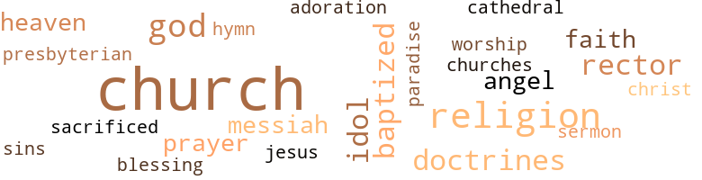

Ave Maria, A Tale, by Burgess, Marie Louise (1895)
5 music-related terms matched in this text.
Most frequent terms in this topic: sung (3); hymn (1); sang (1)
hymn.n.01
Definition: a song of praise (to God or to a saint or to a nation)
| word | sentence |
|---|---|
| hymn | The processional hymn was , . |
sing.v.02
Definition: produce tones with the voice
| word | sentence |
|---|---|
| sang | The choir sang , " O , Lamb of God , that taketh away the sins of the world , have mercy upon us . " |
| sung | The beautiful evening service was sung by the rector , and the " Magnificat " was never sung more beautifully by the choir boys . |
| sung | The beautiful evening service was sung by the rector , and the " Magnificat " was never sung more beautifully by the choir boys . |
| sung | As the choir sung " Soldiers of Christ arise , and put your armor on , " about forty girls came forward and about fifteen men and boys . |
2 violence-related terms matched in this text.
Most frequent terms in this topic: kills (1); brave (1)
kill.v.10
Definition: cause the death of, without intention
| word | sentence |
|---|---|
| kills | She told the sweet sister the cause of her grief ; the sister smiled as she said : " Such grief seldom kills , do your duty and God will bless you . " |
weather.v.01
Definition: face and withstand with courage
| word | sentence |
|---|---|
| brave | " I must be brave and make my decision . |
67 religion-related terms matched in this text.
Most frequent terms in this topic: church (17); Church (6); God (4); religion (4); rector (3)
baptize.v.01
Definition: administer baptism to
| word | sentence |
|---|---|
| baptized | " Ronald , has this baby been baptized ? " she asked . |
| baptized | One evening , a few days later , she asked him to be baptized , and promised to be one of his sponsors . |
| baptized | It was not long before Ronald was baptized . |
blessing.n.05
Definition: the act of praying for divine protection
| word | sentence |
|---|---|
| blessing | Mrs. Hall The bells of St. Cecelia 's Church rang at the close of vespers one joyous Lenten evening ; the priest had pronounced his blessing and all had departed in peace . |
cathedral.n.02
Definition: the principal Christian church building of a bishop's diocese
| word | sentence |
|---|---|
| Cathedral | The windows of the Cathedral which were beautiful by daylight were more so in the twilight . |
church.n.02
Definition: a place for public (especially Christian) worship
| word | sentence |
|---|---|
| church | It will perhaps be a very long time before her sweet voice will join in the " Pater Noster " in this church . |
| church | She took some water and sprinkled it according to the doctrines of her church ; she believed baptism necessary before it died . |
| church | Every brick in this church was sacred to Marguerite . |
| church | Accordingly , on Palm Sunday evening the church was filled to overflowing , and among the worshippers was Margie . |
| church | She had watched her brothers grow up in this church , and they knew no other . |
| church | There were two spots especially dear to her - her mother 's grave and St. Cecelia 's church . |
| church | As soon as she reached home she went to the church and knelt before the altar , with a heart much lighter than when last she knelt there . |
| church | The strains soft and sweet fell on the still air , filling the church with an air of Heaven . |
| church | Kneeling at her bedside , with the little ones around me , I promised to be faithful to my church and to train my little brothers as she had trained me . |
| church | When I think of it I feel as though I sin in thought , and mamma made ; me promise never to leave my church . |
| church | I can not leave the doctrines of the church in which I was trained . |
| church | Why ca n't you come into my church ? " |
| church | " Remember , Margie , my dear old mother who trained me in the doctrines of her church ; it would hasten her end were I to change . |
| church | Were it any other church we would have no need of all this unhappiness . |
| church | It is one God we serve ; I wish it were through only one church . |
| church | " Ronald , I can not leave my church . |
church.n.04
Definition: the body of people who attend or belong to a particular local church
| word | sentence |
|---|---|
| Church | Mrs. Hall The bells of St. Cecelia 's Church rang at the close of vespers one joyous Lenten evening ; the priest had pronounced his blessing and all had departed in peace . |
| Church | Once more the bells of St. Cecelia 's Church chime out in the twilight ; once more the sweet face of Marguerite Earle is seen among its worshippers . |
| Church | He had begun to love the Anglican Church , of which Corinne was a member , and accompanied her there whenever she attended service . |
| Church | One Sunday morning , a few months after the death of Theresa , they sat in the Church of the Messiah listening to a communion service . |
| church | Year after year she had knelt before the altar , and as she grew in years , and strength of mind and body , her love for this church grew stronger . |
| Church | One evening she read among the items of news in one of the daily papers an account of the coming confirmation at the Church of the Messiah . |
| Church | One evening , just as the twilight was deepening and the bells of St. Cecelia 's Church chimed once more the close of the vesper service , the soul of sweet Marguerite Earle took its flight into paradise . |
| churches | Although we worship in different churches , there is but one gate ; all must enter through it . |
curate.n.01
Definition: a person authorized to conduct religious worship
| word | sentence |
|---|---|
| rector | She went to the bedside of the poor girl , whose face bore lines of distress and sickness , and asked if the rector of the parish might be allowed to visit her . |
| rector | The young girl shook her head sadly , but Marguerite sent for the rector , who came and ministered to her . |
| rector | The beautiful evening service was sung by the rector , and the " Magnificat " was never sung more beautifully by the choir boys . |
doctrine.n.01
Definition: a belief (or system of beliefs) accepted as authoritative by some group or school
| word | sentence |
|---|---|
| doctrines | She took some water and sprinkled it according to the doctrines of her church ; she believed baptism necessary before it died . |
| doctrines | I can not leave the doctrines of the church in which I was trained . |
| doctrines | " Remember , Margie , my dear old mother who trained me in the doctrines of her church ; it would hasten her end were I to change . |
eden.n.01
Definition: any place of complete bliss and delight and peace
| word | sentence |
|---|---|
| Heaven | She was motherless and alone in the world , and he pointed her to the mother of our Lord , who was the purest of women , and tried to impress upon her mind that she prayed for all of us with Jesus in Heaven . |
| paradise | One evening , just as the twilight was deepening and the bells of St. Cecelia 's Church chimed once more the close of the vesper service , the soul of sweet Marguerite Earle took its flight into paradise . |
| Heaven | The strains soft and sweet fell on the still air , filling the church with an air of Heaven . |
god.n.03
Definition: a man of such superior qualities that he seems like a deity to other people
| word | sentence |
|---|---|
| God | He loved their little daughter , and now she being dead , he felt as though God had taken her because he did not love the mother as he ought . |
| God | She told the sweet sister the cause of her grief ; the sister smiled as she said : " Such grief seldom kills , do your duty and God will bless you . " |
| God | God meant us for each other . |
| God | It is one God we serve ; I wish it were through only one church . |
hymn.n.01
Definition: a song of praise (to God or to a saint or to a nation)
| word | sentence |
|---|---|
| hymn | The processional hymn was , . |
idol.n.01
Definition: a material effigy that is worshipped
| word | sentence |
|---|---|
| idol | " Ronald must not be my idol . |
| idols | There are few idols which do not become shattered . |
| idol | I fear sometimes you have been almost my idol . " |
jesus.n.01
Definition: a teacher and prophet born in Bethlehem and active in Nazareth; his life and sermons form the basis for Christianity (circa 4 BC - AD 29)
| word | sentence |
|---|---|
| Jesus | She was motherless and alone in the world , and he pointed her to the mother of our Lord , who was the purest of women , and tried to impress upon her mind that she prayed for all of us with Jesus in Heaven . |
messiah.n.01
Definition: any expected deliverer
| word | sentence |
|---|---|
| Christ | As the choir sung " Soldiers of Christ arise , and put your armor on , " about forty girls came forward and about fifteen men and boys . |
messiah.n.03
Definition: the awaited king of the Jews; the promised and expected deliverer of the Jewish people
| word | sentence |
|---|---|
| Messiah | One Sunday morning , a few months after the death of Theresa , they sat in the Church of the Messiah listening to a communion service . |
| Messiah | One evening she read among the items of news in one of the daily papers an account of the coming confirmation at the Church of the Messiah . |
prayer.n.01
Definition: the act of communicating with a deity (especially as a petition or in adoration or contrition or thanksgiving)
| word | sentence |
|---|---|
| prayers | She knelt and said a few prayers . |
| prayer | As the bishop laid his hands on his head , one heart offered a prayer of thanks . |
presbyterian.n.01
Definition: a follower of Calvinism as taught in the Presbyterian Church
| word | sentence |
|---|---|
| Presbyterian | She was a Catholic and he a Presbyterian . |
religion.n.01
Definition: a strong belief in a supernatural power or powers that control human destiny
| word | sentence |
|---|---|
| religion | He thought , after all , there was something in that religion which he did not have . |
| religion | Ronald 's dear mother would not have him change his religion , it would break her heart and we must make the most of my decision . " |
| faith | " No , nor never will ; but you remember how we are divided , to some it seems trifling , but to me , brought up as I have been in my faith , I can not change . |
| faith | I can not , and yet your love for your faith is as strong as mine , so there is nothing for us to do but to part . " |
| religion | He thought her love for him was greater than her religion . |
| religion | " Margie , is it true you will let the question of religion divide us ? |
| religions | Remember the depth of the chasm between Catholicism and the other religions . |
sacrifice.v.04
Definition: make a sacrifice of; in religious rituals
| word | sentence |
|---|---|
| sacrificed | They buried her beside the mother for love of whom she sacrificed so much , and when years after , a gray-haired man knelt by her grave , none knew but himself why he wept so bitterly . |
saint.n.02
Definition: person of exceptional holiness
| word | sentence |
|---|---|
| angel | By the light quivering aspen glade When pain and anguish rack the brow , A ministering angel art thou . " |
| angel | She seemed an angel sent to minister to suffering humanity . |
sermon.n.02
Definition: a moralistic rebuke
| word | sentence |
|---|---|
| sermon | The sermon by the bishop was very interesting and touching . |
sin.n.06
Definition: violent and excited activity
| word | sentence |
|---|---|
| sins | The choir sang , " O , Lamb of God , that taketh away the sins of the world , have mercy upon us . " |
worship.n.01
Definition: the activity of worshipping
| word | sentence |
|---|---|
| worship | Although we worship in different churches , there is but one gate ; all must enter through it . |
worship.n.02
Definition: a feeling of profound love and admiration
| word | sentence |
|---|---|
| adoration | One indeed must have a hard heart who could pass these pictures without a feeling of adoration for the Saviour stealing over him . |